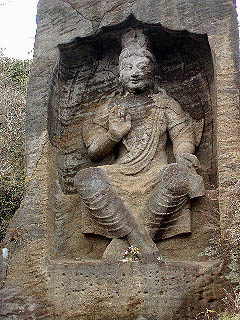
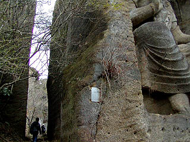

鷹取山/神奈川県横須賀市
横須賀市と逗子市の市境にある鷹取山。
地元に人達にはお手軽な散歩コースとして人気が高いようだ。
元々鷹取石の石切り場だったこの山にはあちこちにこのような採石跡が残っており、チョット古代遺跡っぽい雰囲気を漂わせており、ついでにロッククライマーの格好の練習場になっている。
岩壁にある無数の穴はクライマーによるハーケンの跡である。
かつてはロッククライマーで賑わったが死亡事故が相次ぎ、現在は原則的には禁止になっているそうだ。
・・・でも登ってる人、いました・・・
さて、そんな鷹取山中に大仏がおわす。
案内版によれば逗子市のkさんという人が依頼して横須賀の藤島茂という彫刻家が昭和40年頃に作ったものだそうだ。
それにしても逗子市の川口さん、一体何の権利があってこの山に大仏なんぞを作らせたのだろうか？
もしかしてこの山の持ち主か？
四角い岩を彫り込んだ弥勒仏はかなりの力作である。
大きさは10メートル位はあるだろうか。

端正な顔だちや衣の皺はバーミヤンの磨崖仏を彷佛とさせる。
それよりも四角いフレームに納まった仏像は何だか仏壇みたいです。
大仏さんの足元にはハーケンの跡が見えるが・・・まさか登ったのか？大仏さんに！！
この罰当たりめがああっ！（チョット羨ましげ）

ところで・・・
実はここからが本題なんですけどこの鷹取山にはもう一つの磨崖仏が存在する。
大仏とは別の尾根の遊歩道を歩いているとこんな看板がある。
「壁面に彫刻したり塗装したりすることを禁止します 横須賀市」
・・・その看板の奥の遊歩道からはずれた石切り場跡の洞窟に行くと・・・
うひょお〜。
奥行きの浅い洞窟の壁面に実にカラフルな磨崖仏が並んでいる。
あまり深彫りしていないのでみな妙に平面的でのっぺりしているが、それだけに彫っている人の真剣さが伝わってくるというものだ。
それぞれの磨崖仏の前にはブロックが置かれていて恐らく香炉の代りなのだろう。
つまりただ彫っただけでなく信仰の対象になっていると考えられる。
外壁に彫られているのは増長天か。道元と親鸞のポートレイトも捨てがたい魅力が。
 右壁面にはアジアの心と題されたオレンジに彩色された素敵なレリーフ。
さらにその右手のもう一つの小さな洞窟には不動妙王やちびまるこちゃんに出てきそうなお釈迦さんが彫られている。
こんな人知れずひっそりとしたところでこんな濃密なインディーズ信仰空間にであえるとは、感動的ですらあった。
それにしても一体誰が？何故？
正確な事は一切判らないが、状況から見て恐らく個人が勝手に磨崖仏を彫ったものだろう。
芸風からいって恐らく一人の手によって作られたと思われる。
しかし大仏はOKでこれはダメという線引きは一体何なんだろう。
大仏彫るのがダメというわけではなく、こっちの磨崖仏だって素晴らしいものだと思うんですけど。
ロックククライミングは原則禁止なのに磨崖仏は禁止。
右壁面にはアジアの心と題されたオレンジに彩色された素敵なレリーフ。
さらにその右手のもう一つの小さな洞窟には不動妙王やちびまるこちゃんに出てきそうなお釈迦さんが彫られている。
こんな人知れずひっそりとしたところでこんな濃密なインディーズ信仰空間にであえるとは、感動的ですらあった。
それにしても一体誰が？何故？
正確な事は一切判らないが、状況から見て恐らく個人が勝手に磨崖仏を彫ったものだろう。
芸風からいって恐らく一人の手によって作られたと思われる。
しかし大仏はOKでこれはダメという線引きは一体何なんだろう。
大仏彫るのがダメというわけではなく、こっちの磨崖仏だって素晴らしいものだと思うんですけど。
ロックククライミングは原則禁止なのに磨崖仏は禁止。
磨崖仏を彫ったって怪我したり死人が出たりしないんだし、スプレーで描いた落書きとかじゃないんだし、むしろ個人的にはどんどん増えてもらいたいものなのだが、そこんとこわざわざ看板まで立てて禁止しなきゃいけないというのは如何なものでしょうか？ホントに判らない。
それとも逗子市のkさんがお願いすれば横須賀市もOKなのだろうか？
そこんとこどうなんでしょう。横須賀市。
中には筋彫だけされていて彩色されていないものもある。
志半ばで断念したものであろうか。それとも今後、禁止の看板も無視してやっちゃうんでしょうか。
負けるな！インディーズ磨崖仏！
情報提供はへりおすさんです。
200３.３.
珍寺大道場 HOME